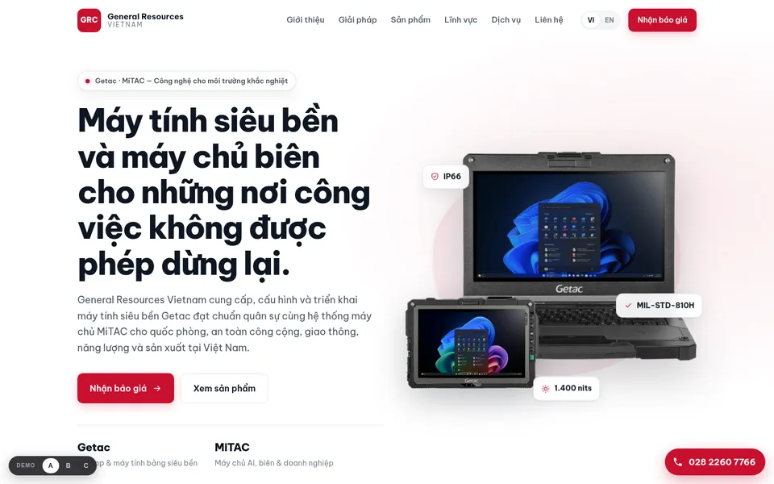
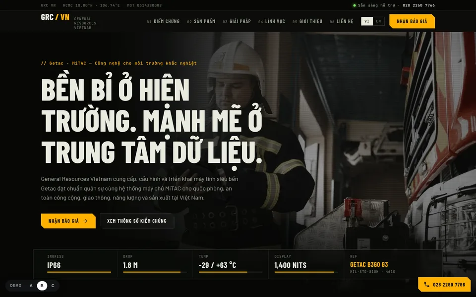
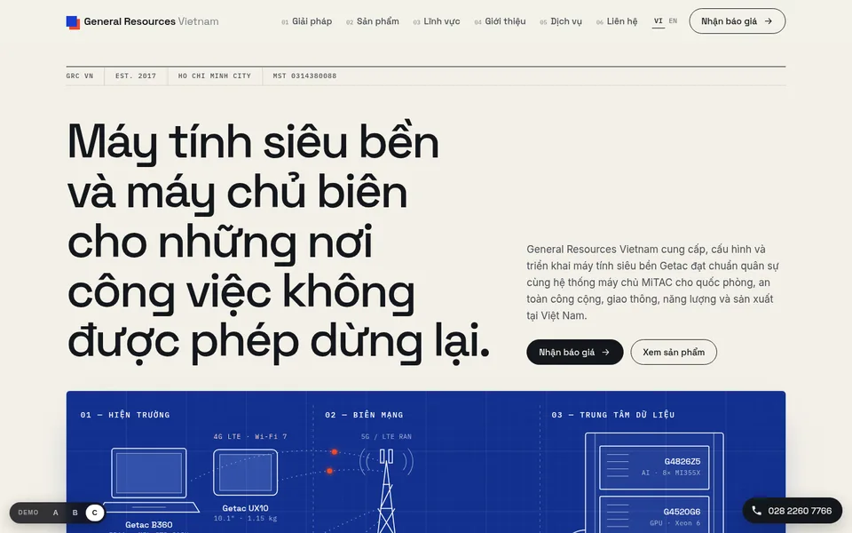

Cả ba dùng chung một nội dung song ngữ Việt / Anh, đều chạy tốt trên điện thoại, có form báo giá, xem chi tiết sản phẩm và nút gọi nhanh. Chọn phương án phù hợp nhất — nội dung sẽ được hoàn thiện theo thông tin GRC VN cung cấp.All three share the same bilingual Vietnamese / English content, work on phones, and include a quote form, product detail views and a click-to-call button. Pick the direction you like — we will finish the content with the details you send us.
02:14 Mới: Website trong thời AI — kế hoạch 3 bướcNew: Websites in the AI era — a 3-step planVì sao website phải trả lời được cả người lẫn AI, 24/7. Đọc trong 3 phút.Why the site must answer both people and AI, 24/7. A 3-minute read. Đọc ngay →Read it →
Sáng, chuyên nghiệp, màu đỏ thương hiệu. Phù hợp hình ảnh doanh nghiệp B2B, dễ tin cậy với khách hàng cơ quan nhà nước.Light and polished with brand red. A classic B2B look that reads as trustworthy to enterprise and government buyers.

Tối, mạnh mẽ, phong cách "hiện trường". Có biểu đồ tương tác so sánh độ bền: nhiệt độ, chiều cao rơi, chống nước, độ sáng.Dark and rugged with a field-ops feel. Includes an interactive stress-test chart: temperature, drop height, ingress and brightness.

Phong cách tạp chí kỹ thuật. Sơ đồ động "từ hiện trường đến trung tâm dữ liệu" giải thích giải pháp Getac + MiTAC trong một hình.Editorial, engineering-drawing style. An animated "field to data center" diagram explains the Getac + MiTAC offer in one picture.
Nội dung demo được tổng hợp từ thông tin công khai (đăng ký doanh nghiệp, trang Getac, MiTAC). Gửi cho chúng tôi dưới bất kỳ dạng nào — văn bản, file, ảnh.Demo content was compiled from public sources (business registry, Getac and MiTAC sites). Send it to us in any form — text, files, photos.